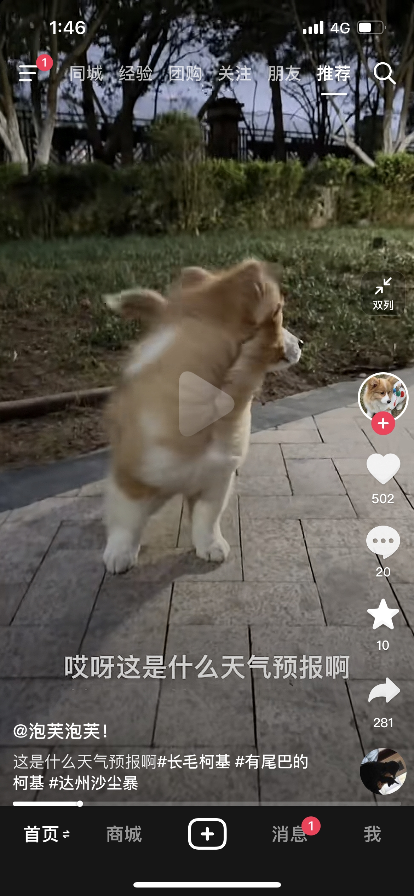
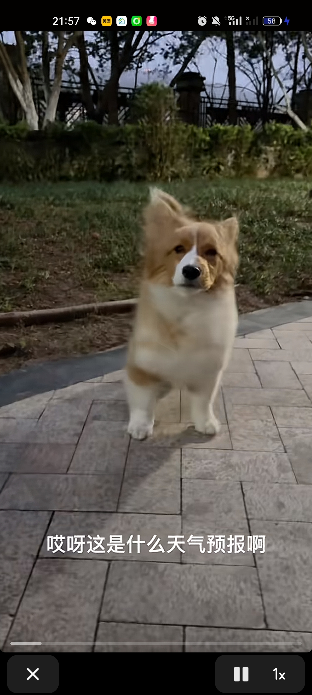
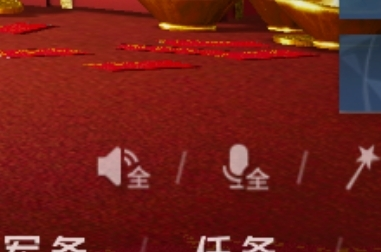
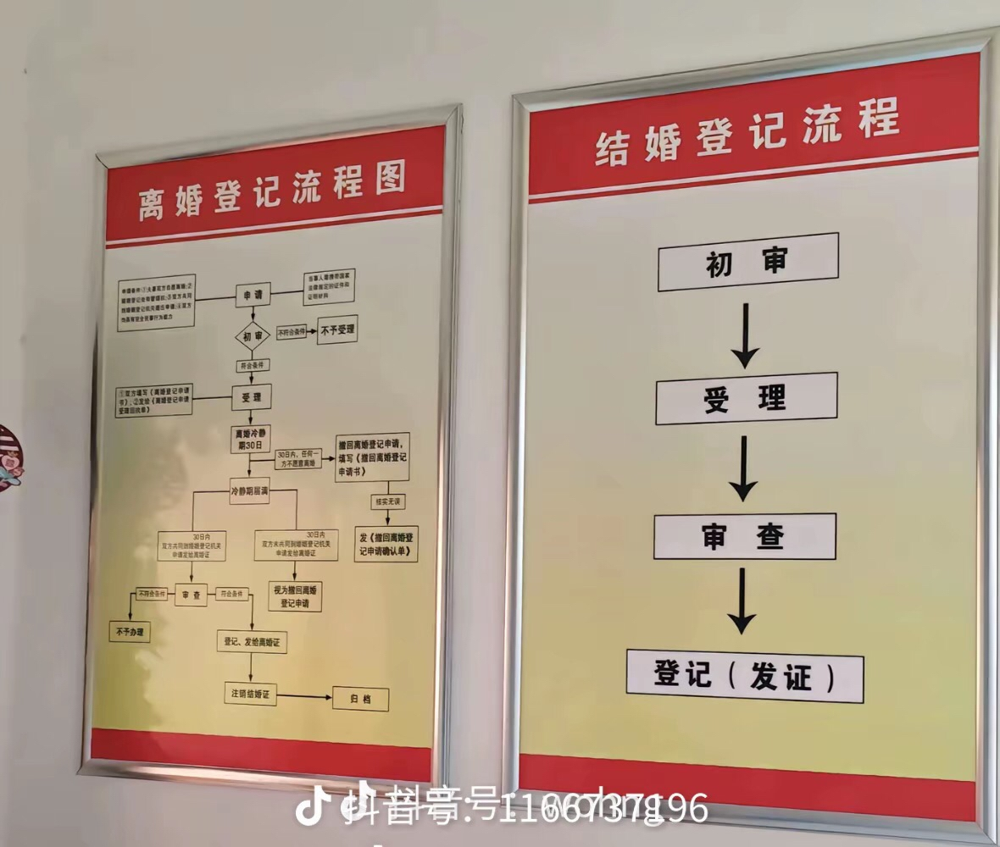
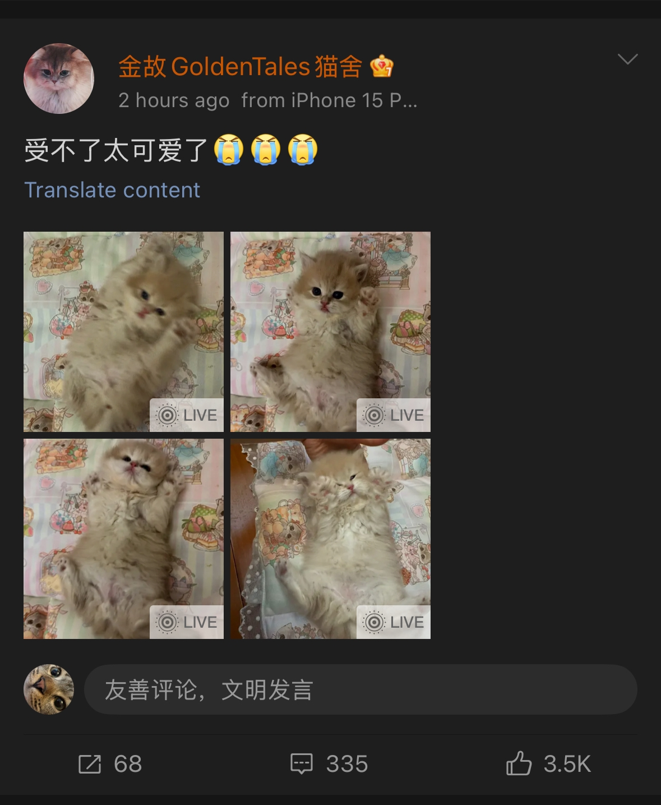

还不驱虫，更待何时[吃瓜群众] 
给孩子吹成秃头了[泪奔] 
还好底盘稳[看]
带尾巴的柯基好帅好萌
我这小心脏呀！第三节直接关了电视[捂脸]
这哈维是真的准的变态[捂脸]不过，胡队，MVP！
主播会干农活，做手工，绘图，养猫养狗一把好手，还会押韵，完了，是心动的感觉[蜜蜂狗]
谁懂女儿说完后的救赎感
知道这个是什么吗 这是能保护家人的 
真用m4救女儿的爸爸
父亲：咱这样能火吗 女儿：相信我，包火的[赞]
他爸：你呼吸难道不浪费空气吗[憨笑][赞]
一个埋漠河 一个埋日喀则
医生：普通感冒，拿点儿药… 儿子：火化吧，另一个也别留了，省事儿[我想静静]
真的是唱出了书记的忧伤，局长的迷茫，主任的寂寞，科员的悔恨……[泣不成声][泣不成声]
闭眼男大 睁眼人大
有一种网恋奔现发现属于班主任的无力感[流泪]
肯定降低了啊 好多还没来得及离的都死了[鼓掌]
离婚的冷不冷静我不知道，我这个未婚的倒是冷静了[憨笑]
丧偶率提高了不少[微笑]
宽进严出呀……
其实还是很有效的，我姐21年就想离婚了，被拖到今年才离成，这不就降低21年的数据了吗
别处看到的图，有点可怕。 
已经四年了吗[宕机][宕机][宕机]除了感觉被杀的，被打的更多了，没啥真正意义
冷静期让想结婚的彻底冷静了[捂脸][捂脸][捂脸]
这话说的特别对，离婚对于老百姓来说，就是一段错误的缘分走到了尽头，本就是这个结果，搞东搞西没劲
虽然冷静期没有降低离婚率，但它降低了结婚率呀[看]
居然实行了4年了[流泪][流泪][流泪][流泪]我的妈耶[流泪][流泪][流泪][流泪]那么多家暴事件还持续实行了4年
我被一个男人杀了，他可能会偿命，我被和我有结婚证的一个男人杀了，他可能只会坐6年牢[微笑]
不合格的可以卖了吧[暗中观察]
夫妻两个一个对万事如意发狂 一个为春江水暖着迷[看]
两夫妻 一个一直发万柿如意 一个一直发自己生的鸭蛋们[机智]
就是这样，继续保持，你们俩口子比着发，为各自的激推窝次疯狂打call 
古代的生活细节传到现在变成了禁忌[微笑]
古代人：现代人真封建
古人说女子经期不宜干什么什么，人家古人是体谅女子特殊时期不宜过度劳累，传到今天变成嫌弃了，真是一代不如一代[皱眉]
第一名[思考][思考][思考] 古代：筷子拿的长夹的远 现代：筷子拿的长嫁的远[尬笑][尬笑][尬笑]
晚上剪指甲我有发言权，我妈是医学影像科的，她在她们洗片子的暗室给我剪指甲，剪出血了还嫌我叫
还有 道士不吃牛肉是因为它善 那是因为古代牛是耕地的劳动力 现在 应该改成道士不吃旋耕机 因为它善[捂脸][捂脸]
说月子不可以洗澡的，那时候没有空调没有吹风机没有热水器，洗了澡肯定会着凉。现在就不一样了，现在产科医生都会叮嘱要清洁。
必须叫你儿子儿媳分房睡，这地太高产了
小小的军分区司令。。。多么冷门的词[尬笑]
女主还不够惨吗？男主只是没了性命，可是女主她没的可是爱情啊哈哈哈哈哈哈哈哈哈哈哈哈哈哈[憨笑][憨笑][憨笑][憨笑]爽
冰冷的老公变成了温暖的数字啊[憨笑]
谁发明的“那年风云政坛，死去的只有我的丈夫”太绝了[憨笑][憨笑][憨笑]
“坐拥万里江山，享无边孤独”，这种结局终于轮到我们女主角了[笑哭]
既然如此，再把柴靖接回来！！！
性格软弱的老婆婆，爱非亲生但聪明还特别爱自己的女儿，因公殉职的功臣老公，忠心耿耿的老公属下=孤儿寡母身价丰厚财不露白还有一大堆有权有势闺蜜的烈士家属
双胞胎侍卫姿色尚可[暗中观察]
男主只是失去了生命，女主可是失去了挚爱，守着冰冷无用的钱财度日，可怜啊[流泪]
何文慎的剧情是最震惊我的，按以前的套路男二就算被拒绝了也会继续死心塌地暗中相助，他直接破防攻击，跟现实里的某些人一模一样。
好真实，上交前自己贪下了一大笔[偷笑]
总算让我看见这种坐拥万贯家财，偶尔怀念死男主的文了[看]
女主还不够惨吗？虽然一辈子吃香喝辣但是一生都在缅怀深爱的男人[流泪]我太怜惜她了！就算她以后搞个替身文学我都能谅解她，因为她太爱了[爱心]
死了给女主留大笔遗产的男主，才是好男主……
终于有女性角色坐拥财产，享无边“孤寂”了
这一次 致敬流浪师！ 也致敬所有的中国极限运动的兄弟姐妹！ 借一句极盗者中的话“这里的每一阵风都有名字，而流浪师的名字也将留在风里”
这新闻过了挺久了，偶尔搜一下超级流浪师看看还是没消息
超级流浪师，刚关注就失踪了，虽然惋惜，但能死在热爱的路上，也算是最好的归宿了[感谢]
我还以为你要去找超级流浪师呢
作者说我笔下的何妍从未爱过傅慎行[赞]
这部剧梁远泽真的选角找错了，要不是我看过原著我都以为梁远泽是大boss，他老是给人一种阴森森的感觉[黑脸][黑脸]而且他都没有好好理解剧本居然能说出“能重新接受hy已经很不错了”[疑问][疑问]
都这样了还有人磕他俩[捂脸]
原著真的超好看！！我是好多年前看的原著，比电视剧好看。女主一直大女主 从未爱过男主，而且一直在想办法扳倒男主，真的厉害的。
看小说的时候都恨死这么个男主了，女主明明原本那么幸福[尬笑]不过最爽的就是作者下场说女主从来没有爱过男主。
但凡她老公换个演员我也不至于站男女主，有时候她老公看着比傅慎行还阴
[尬笑]看了原著谁会爱男主，对女主的伤害都是常人不能忍受的
潮汕人在外地真的团结，会互相帮忙。某些地方的同乡找过去就往死里坑
我发现以前火的歌全杀回来了[微笑]
Read more: